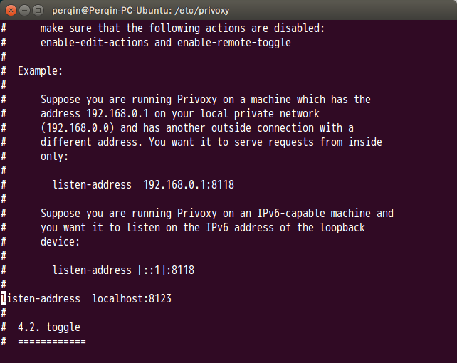
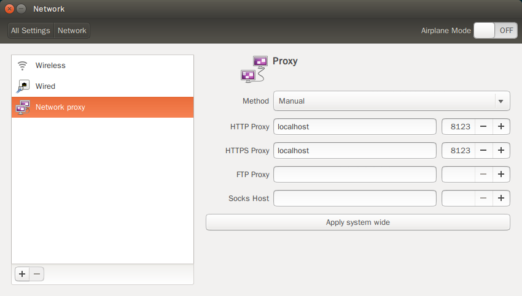

重装Ubuntu系列：Shadowsocks配置
说实话Ubuntu（版本14.04 LTS）的重装成本比Windows高太多了，一方面是自己不熟悉，另一方面也不如Windows只要exe和msi就能搞定，然而搞崩Ubuntu或者改动分区之后又不得不重装（妈蛋重装系统和重搭博客是我干得最多的事！！），往往有些配置有没有记下来，于是有了写这个系列的想法。
作为本系列的第一蛋，自然要先把科学上网的问题解决，因为已经有了VPS，所以只需要搞定客户端的问题。
参考链接
- Ubuntu 14.04 VPS安装配置Shadowsocks的方法
- snachx/gfwlist2privoxy
- gfwlist/gfwlist
- 10.04 - How to correctly add a custom daemon to init.d? - Ask Ubuntu
安装Shadowsocks-python客户端
事实上编译libev版本的也是可行的，但是实在麻烦，这里图方便就用了python版本的实现。
在终端输入以下命令：
sudo apt-get update
sudo apt-get install python-gevent python-pip python-m2crypto
sudo pip install shadowsocks
至此Shadowsocks就安装好了。
配置客户端
Shadowsocks的python版本同时安装了客户端和服务器端，分别是sslocal和ssserver。
在/etc/shadowsocks/新建一个文件sslocal.json（其实放哪里无所谓，但是配置文件一般放在/etc里面），输入以下内容：
{
"server":"1.2.3.4",
"server_port":5678,
"local_port":1080,
"password":"passfoobar",
"timeout":600,
"method": "aes-256-cfb"
}
其中server是服务器地址，server_port是服务器端口，local_port是本地端口，一般默认就是1080，password是密码，timeout是超时时间（并不知道有什么用- -），method是加密方式，默认就是aes-256-cfb。
运行Shadowsocks
在命令行输入
sudo sslocal -c /etc/shadowsocks/sslocal.json -d start
之后Shadowsocks就作为守护进程在后台运行了，参数c指定了配置文件，d参数要求运行守护（后台）进程。这里需要注意的是必须用sudo运行，否则会无法读取配置文件。
安装与配置Privoxy
运行了Shadowsocks之后你会发现即使给浏览器设置了代理端口，依然无法翻墙，这是因为Ubuntu 14.04本身不支持socks5协议，而python实现的Shadowsocks本身只有这个协议，因此在看了Windows上C#版本的Shadowsocks实现的源码之后想到了解决方法：使用Privoxy在localhost:8123运行一个HTTP代理，然后转发到1080端口上去，然后将浏览器的代理设置到8123端口就行啦！
事实上使用Privoxy还有一个好处，那就是可以依托Privoxy强大的action文件进行局部代理，Windows上是通过pac文件实现的，但是Privoxy不支持pac文件，怎么办呢？
庆幸的是，GitHub上有一个项目gfwlist2privoxy可以把GFWList文件转换成Privoxy的action文件，而GFWList是一个开源项目，收集更新被墙的域名列表。于是解决方法也出来了：从gfwlist下载最新的gfwlist文件，然后用gfwlist2privoxy转换成action文件即可！
废话说完，开始配置，首先下载Privoxy：
sudo apt-get install privoxy
完成之后在这里下载最新的gfwlist.txt，放到个人目录里，然后安装gfwlist2privoxy并生成action文件：
sudo pip install gfwlist2privoxy
sudo gfwlist2privoxy -i ~/gfwlist.txt -f /etc/privoxy/gfwlist.action -p "127.0.0.1:1080" -t socks5
接下来修改Privoxy的配置文件：
sudo vi /etc/privoxy/config
首先指定监听地址：

然后增加action文件：
最后重启Privoxy服务，只要没有报错就大功告成！
sudo service privoxy restart
给浏览器配置代理
火狐浏览器的设置里就可以配置，直接修改即可：
至于Chromium浏览器，是直接使用系统设置的，这里可以直接在Ubuntu的网络设置里修改，进入System Settings - Network - Network proxy，设置完成后点击Apply to system wide即可。

另一种方法是在.bashrc文件末尾加上
export http_proxy=http://localhost:8123
export https_proxy=http://localhost:8123
之后输入
. ~/.bashrc
更新环境即可。
让Shadowsocks开机自启动
这里一切都接近完美，但是仍然有个问题：每次开机需要手动启动Shadowsocks，能不能把Shadowsocks也变成service呢？当然可以，只需要在/etc/init.d/里面增加一个脚本即可。这个目录里有个skeleton文件，是模板文件，我已经进行了修改，虽然没有输出，但是能够正常启动，从这里下载这个文件到个人目录，然后更新服务列表启动服务：
sudo cp ~/sslocal /etc/init.d/sslocal
sudo chmod a+x /etc/init.d/sslocal
sudo update-rc.d sslocal defaults 97 03
sudo service sslocal start
还不够完美
到这里我们已经能够无痛翻墙，但是还有两个问题：
- 服务自启动脚本没有输出，不能确定运行状态；
- 无法自动更新gfwlist和更新用户规则
这两个以后我会解决后另行发文记录，嘿嘿！